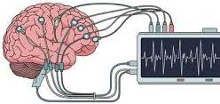
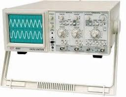
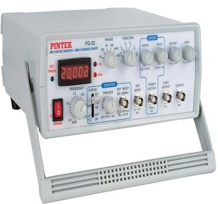
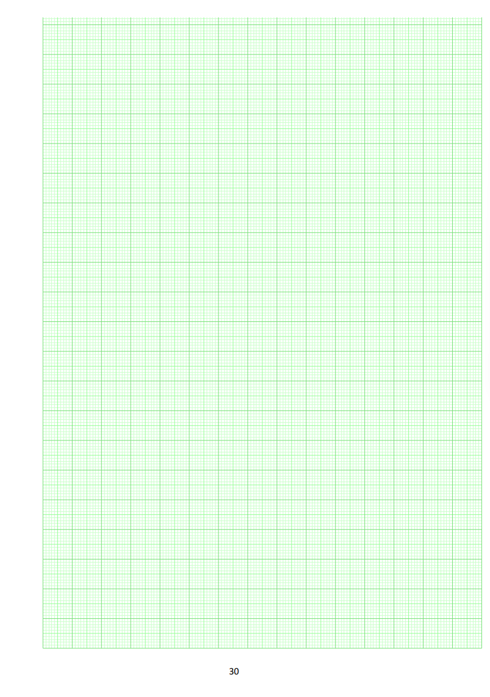

Aim
You will read a live voltage–time display, count divisions on the graticule, and compute $A$, $T$, and $f$ for triangular, square, and sinusoidal waves.
Learning outcomes
By the end of this session you should be able to:
| ILO | Outcome |
|---|---|
| P 6.1 | Explain the structure and function of the oscilloscope and when to use it. |
| P 6.2 | Measure amplitude, time period and frequency of a wave from the screen. |
| P 6.3 | Represent measured waveforms graphically in the lab book. |
What is an oscilloscope?
An oscilloscope (CRO) draws a live graph of an electrical signal. Vertical = voltage. Horizontal = time. The bright line — the trace — is the waveform.
In this lab a function generator feeds triangular, square, and sinusoidal waves into the CRO. The same skill — reading amplitude and timing from a voltage–time display — underlies ECG, EEG, and EMG monitoring.
How many volts each vertical square represents. Height in divisions × volts/div → voltage.
How much time each horizontal square represents. Width of one cycle × time/div → period $T$.
Medical perspectives
Oscilloscope-style voltage–time displays underpin monitoring of body electrical signals.

- Monitoring of electrical signals in the body.
- Use in ECG (heart), EEG (brain), and EMG (muscles).
- Use in diagnosing neurological and cardiac conditions.
Method
Apparatus and the sequence you follow at the bench.


-
Turn on the oscilloscope. Wait a few seconds for a trace.
-
Connect the function-generator output to a CRO input (e.g. CH1).
-
Adjust Intensity, then Focus, until the line is bright and sharp.
-
Select a triangular wave. Change volts/div until the wave fits the screen.
-
Change time/div until the sweep matches and the wave stands still.
-
Measure vertical divisions peak-to-peak ($Y$). Multiply by volts/div → $V_{PP}$; $A = V_{PP}/2$.
-
Measure horizontal divisions for one cycle ($X$). Multiply by time/div → $T$. Then $f = 1/T$.
-
Repeat for square and sinusoidal waves. Trace all three in the workbook.
Observation · Formulas
Peak-to-peak from the vertical scale:
$$V_{PP} = Y\text{ deflection} \times \frac{\text{volts}}{\text{div}}$$Amplitude (half of peak-to-peak):
$$A = \frac{V_{PP}}{2}\ \text{volt}$$Duration of one complete cycle:
$$T = X\text{ deflection} \times \frac{\text{Time}}{\text{div}}$$Units follow the time-base: Hz, kHz, or MHz as appropriate.
Worked check: $Y = 3.0$ div at $2$ V/div → $V_{PP} = 6.0$ V, $A = 3.0$ V. $X = 4.0$ div at $1$ ms/div → $T = 4.0$ ms $= 0.004$ s, $f = 250$ Hz.
Result
- 1. Amplitude of the given waveform $A =$ volt
- 2. Time period of the given waveform $T =$ second
- 3. Frequency of the given waveform $f =$ hertz
Tabulate separately for triangular, square, and sinusoidal waves; include traced waveforms (ILO P 6.3).
Trace waveforms
Represent data graphically (ILO P 6.3). Toggle the example traces on the lab graph paper.
